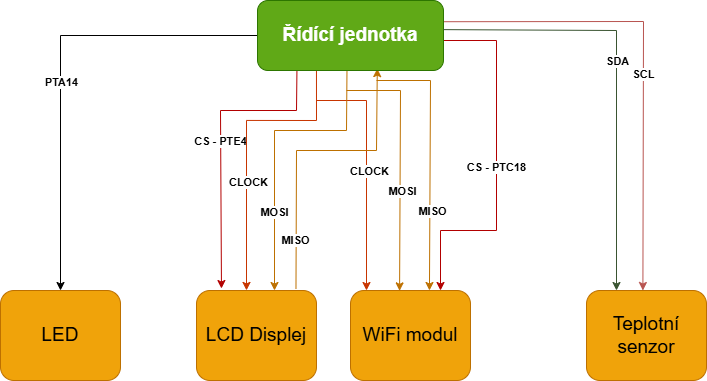

Výroba moderních čipů patří k technologicky nejnáročnějším procesům dnešní doby. Jednotlivé struktury na čipu se vytvářejí v měřítku několika nanometrů pomocí složitých postupů, jako je fotolitografie, nanášení tenkých vrstev materiálů a jejich přesné leptání. Každý krok výroby musí probíhat s extrémní přesností, protože i nepatrná odchylka může ovlivnit výsledné vlastnosti čipu.
I když je čip po výrobě fyzicky správný a splňuje všechny technické parametry, tím jeho cesta zdaleka nekončí. Čip je obvykle součástí většího systému, kde musí spolupracovat s dalšími obvody, pamětmi, senzory nebo periferiemi. Právě v této fázi se často objevují další úskalí, která už nesouvisí s výrobou samotnou, ale se vzájemnou komunikací mezi jednotlivými čipy.
Aby celý systém fungoval, musí být správně nastaveny komunikační protokoly, napěťové úrovně i časování signálů. Pokud se některý z těchto parametrů liší, může dojít k situaci, kdy jsou všechny čipy vyrobené správně a nejsou poškozené, ale přesto spolu nedokážou komunikovat.
Níže naleznete obrázek řídící jednotky připojené ke 4 periferiím.

Pro potřeby otázky uvažujeme v obrázku pouze ovládací a komunikační vodiče.
LED – LED svítí v případě, že řídící jednotka zapisuje hodnotu LOW (0 V).
LCD Displej – zobrazuje aktuální teplotu. Řídící jednotka ho ovládá přes SPI sběrnici. CS je aktivní v LOW. Přes SPI se musí poslat suma dvou hexadecimálních čísel: 0x18 + hodnota aktuální teploty ve stupních Celsia v hexadecimální podobě.
WiFi modul – slouží k předávání dat na cloud. Řídící jednotka ho ovládá přes SPI sběrnici. CS musí být HIGH. Posílaná data skrze MOSI musí vždy začínat aktivační sekvencí, která se spočítá jako 0xAD & 0xF0. Potom následují data, která obsahují aktuální teplotu. Odpověď od WiFi modulu musí vždy být negovaná hodnota dat jako potvrzení o jejich přijetí.
Teplotní senzor – řídící jednotka pomocí I2C komunikace ze senzoru vyčítá aktuální teplotu. Adresa senzoru je 0x70. Pro příkaz čtení se musí provést operace XOR s adresou a hodnotou 0x01.
Uvažujme následující sekvence kroků v čase:
- SDA signál obsahuje data 0x71 a vrácená data byla 0x16.
- PTE4 jde do LOW, PTC18 jde do HIGH. MOSI obsahuje data 0xA0. Další datový rámec na MOSI obsahuje data 0x16.
- PTA14 jde do LOW, PTE4 jde do HIGH a MOSI obsahuje data 0x16.
- MOSI obsahuje data 0x2E.
- PTE4 jde do HIGH.
Podle poskytnutého obrázku a informací o jednotlivých krocích určete, jaké tvrzení není pravdivé.